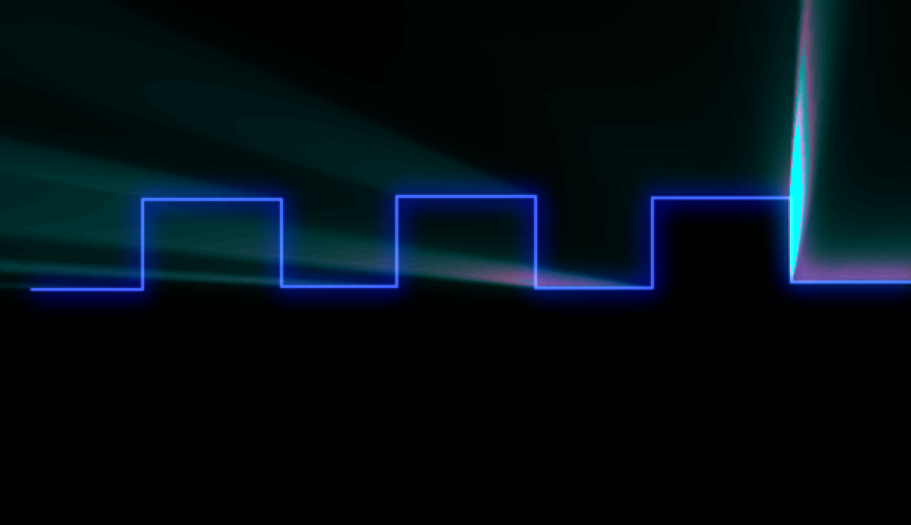
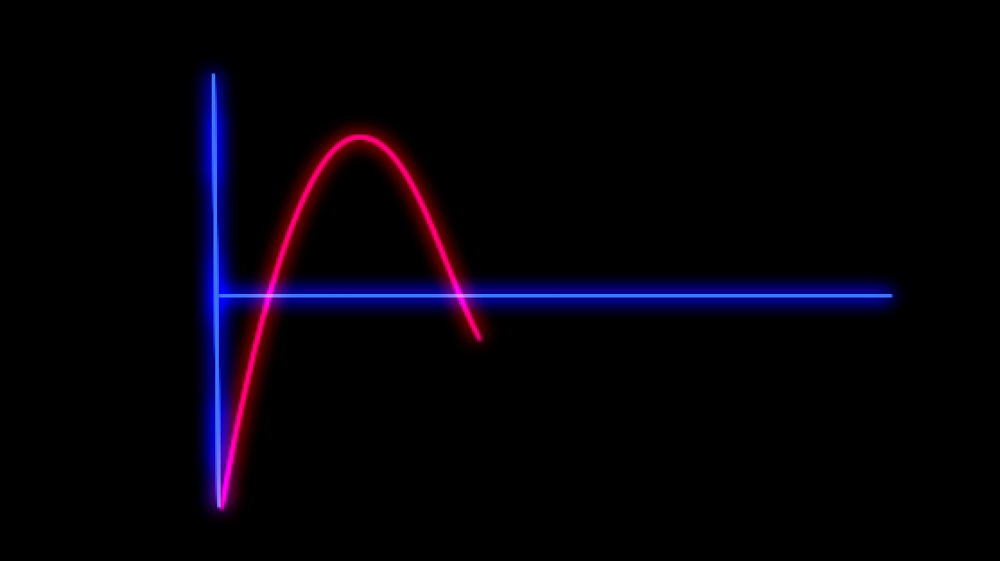

Both the smart car and the gondola are programmed with the c programming language. The code is then compiled with the SDCC compiler, enabling the embedded functionality with ease.
We implemented all our hardware with sophisticated wiring and design on a single protoboard, also known as a breadboard. Good hardware design goes a long way.
Analog to Digital Conversion (ADC) on the Smart Car converts an voltage supplied by the hardware into a digital value ranging from 0 to 255. By combining this technology with the voltage-altering potentiometer, we are able to adjust software parameters with on-board hardware.
Pulse Width Modulation (PWM) is a type of digital signal sent in pulses, allowing the practitioner to control the power supplied to electrical devices. In the context of our embedded systems, PWM is utilized to control the speed and direction of motors on both the Blimp and the Smart Car.
The source code for our embedded systems are entirely maintained on GitHub, allowing for better team collaboration and version control. View the Git repo here.
The Silicon Labs C8051 is a 8-bit microcontroller serving as the heart of these embedded systems, enabling seamless communication between hardware and software. Without it, our ideas wouldn't come to life.
I2C (Inter-Integrated Circuit) is a serial computer bus utilized to attach peripheral devices to microprocessors for short-range communication. We've implemented this standard to take advantage of the power of ranger, compass and accelerometer for use on our embedded systems.
Control algorithms involving PID (Proportional-Integral-Derivative) are deployed extensively on our embedded systems to enable course correction and heading adjustment. Without it, our Blimp and Smart Car would crash into the obstacles mercilessly.



Social